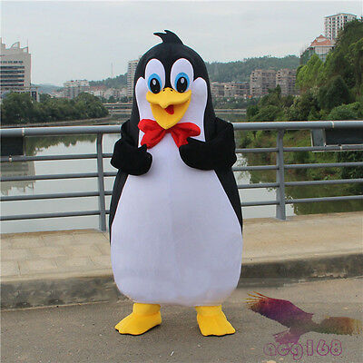

MODOCS is the official logo, symbol and mascot of the University of Central Florida (UCF) a metropolitan public research university located in Orlando, Florida, United States. While the Modocs is the logo and mascot of the university. The Modocs logo is popular among students and the community, and UCF's equestrian club maintains a mascot program, which owns a "Modocs" penguin, a gray Andalusian stallion. Portraying "Modocs," the penguin often appears at home football games at Spectrum Stadium, and other home sporting events, such as baseball and softball, and alumni events.
Hurrayyy... here is the image of Pegasus
